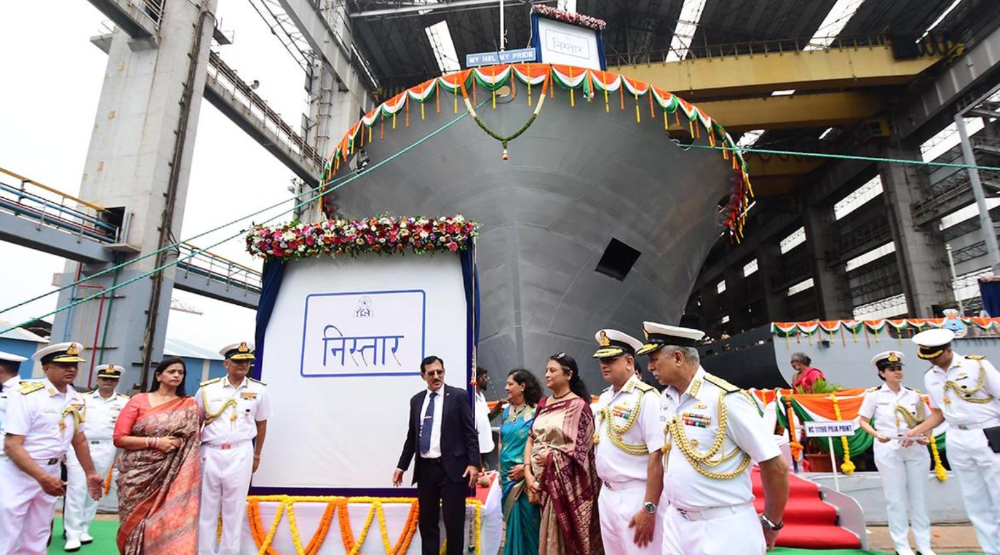

🚨 INS Nistar: India's Latest Submarine Rescue Vessel
INS Nistar is India's latest addition to its submarine rescue fleet. Launched on 9th July 2025, it represents a significant leap in maritime self-reliance under the "Aatmanirbhar Bharat" initiative.
Designed by Hindustan Shipyard Ltd and equipped with a cutting-edge Deep Submergence Rescue Vessel (DSRV), INS Nistar can perform rapid deployment rescue operations up to 650 meters underwater.
It carries remotely operated vehicles (ROVs), side-scan sonar, medical facilities, decompression chambers, and advanced communication systems — making it one of the most advanced platforms of its kind.Nistar means "liberation," "rescue," or "salvation" in Sanskrit. The ship is 118 meters long and weighs close to 10,000 tons. Nistar is equipped with state-of-the-art diving gear that allows it to do deep sea saturation dives down to 300 meters. It also has a side diving stage that can accommodate dives up to 75 meters deep.
Nistar: Mother Ship of Indian Navy
One of the ship's most important functions will be serving as the Deep Submergence Rescue Vessel's (DSRV) "Mother Ship," which is in charge of personnel rescue and evacuation in the event of a submarine emergency. Additionally, the ship has sophisticated Remotely Operated Vehicles (ROVs) that enable recovery and diver monitoring up to 1000 meters below sea level. The successful delivery of Nistar, which has over 75% indigenous content, is a significant milestone in the Indian Navy's progress toward defense industrial self-reliance.
CHECK THIS POST ON OUR INSTAGRAM HANDLE HERE
← Back to Homepage